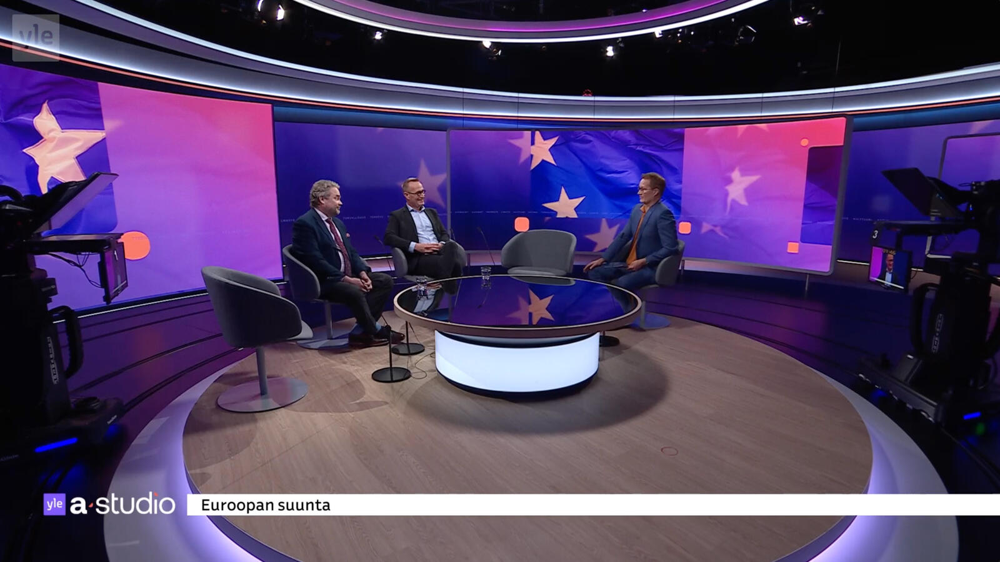

By David
What does it take to put a curved LED display at the centre of a national news studio? In June 2024, Finland's national broadcaster Yle launched a visual rebrand for its news programming — a purple identity for news, lime green for sport, designed so viewers can tell the two apart at a glance. The centrepiece was not a graphic package. It was a custom panoramic ultra-wide curved LED display built to wrap the studio and carry that identity on air.
Broadcast studios are among the most demanding LED environments there are. Everything the studio does — the lighting, the cameras, the presenters, the graphics — converges on a screen that has to hold its colour on live television. This case study looks at how the display was specified and why each requirement mattered.
The Brief: A Rebrand That Had to Live on a Screen
A broadcaster rebrand is unusual as an LED project because the screen is not decoration — it is the identity. Yle's new visual system runs on colour: purple gradients and solid blocks for news, lime green for sport. Those colours had to appear identically across the backdrop, the ring lighting and the anchor desk, so that a shot from any camera angle reads as the same brand.
Three requirements came out of that:
- Continuity of colour — the brand colour had to hold across a wide surface, not just in the middle of it.
- No visible edge — a rectangle behind the presenter would have broken the "wrapped environment" effect the set was designed around.
- Camera safety — the wall would be on live broadcast and on-demand streaming, so it had to be clean on camera at all times.
Why a Curved Panoramic Display Instead of a Flat Wall
The obvious alternative would have been a large flat LED wall behind the anchor. That works, but it reads as exactly what it is: a screen in a room.
A curved panoramic surface changes the geometry of the shot. It wraps around the presenter's position, so the same display serves as a background for a wide shot, a two-shot and a single, without a corner edge cutting into frame. The set stops looking like a presenter in front of a wall and starts looking like a presenter inside an environment — which is what a rebrand is trying to achieve.

Colour Fidelity: Where Broadcast Punishes Average Panels
In retail or outdoor signage, a small colour shift is invisible. In a news studio it is not, for three reasons:
| Pressure | Why it matters in a studio |
|---|---|
| Appears beside skin tones | Any green or magenta cast in the screen is immediately visible against a presenter's face |
| Appears beside studio lighting | The wall sits in the same frame as professional lighting with a known colour temperature; the screen has to match, not fight it |
| Brand colours are exact | A broadcaster's purple is defined, not approximate. The screen has to reproduce the specified colour, not a nearby one |
The practical requirement is not only accuracy at one moment, but consistency across the whole surface and repeatability over time. A wall that is uniform on installation but cannot be recalibrated later becomes a liability: replace one panel after a fault and the repair is visible on air. Studios therefore need calibration data that can be re-applied, and batch consistency between the installed wall and any future modules.
Refresh Rate: The Specification Live Television Cannot Compromise On
This is the number that decides whether the wall is usable on air at all, and it has nothing to do with how the screen looks to the eye in the studio.
A camera captures a slice of time set by its shutter. If the LED panel refreshes too slowly relative to that shutter, the camera catches the panel mid-cycle and the broadcast shows banding, scan lines or a shimmering moire. The people in the studio see none of it — the audience at home sees all of it.
For a news studio the exposure is constant rather than occasional: the wall is on camera for the length of every bulletin, at fixed shutter angles, alongside other screens and LED sources in the set. That pushes studios toward high refresh panels so the wall stays clean without the crew managing it shot by shot.

Building a Seamless Curve
A curved studio wall is not a special panel that arrives pre-bent. It is a run of standard cabinets joined with angle-adjustable locking edges, set out along a fixed radius. Two details decide whether it reads as seamless:
- Radius versus cabinet width. The tighter the curve, the more the seam gap opens between adjacent cabinets. The designer picks a radius the cabinet width can carry smoothly, then content is mapped to mask whatever gap remains.
- Continuous content across seams. Gradients are unforgiving — a background that flows across the surface immediately exposes uneven seams or brightness differences. Running gradients across the wall, as this set does, is effectively a quality test every second it is on air.
This is why broadcast and rental cabinets share a design philosophy: both are built to be joined repeatedly and to hold alignment. A cabinet platform suited to touring also suits a studio curve, because both demand that panels line up predictably every time.
Integrating the Screen With the Set, Not Beside It
The display is only one element of the rebrand. In this set the identity continues across the ring lighting and the anchor desk, which is what makes the colour read as an environment rather than a backdrop image.
That integration has an LED consequence: the screen must be able to hold a static or slowly moving brand colour cleanly, at low brightness, over long periods — without banding, flicker or unevenness that a camera would pick up. A wall that looks impressive playing high-motion content can look flawed holding a flat purple field for ten minutes. Broadcast studios need both.

The Result
The studio launched as a wrapped environment built around a custom panoramic curved LED display, carrying the broadcaster's purple and lime identity across backdrop, ring lighting and anchor desk — and holding it consistently on live broadcast and on-demand streaming.
For the broadcaster, the outcome is not "the screen worked". It is that the wall functions as the set itself: it survives camera work from several angles, reproduces the brand colour that the whole identity depends on, and requires no per-shot management from the production crew.

What to Take Away If You Are Specifying a Studio or Set LED Wall
- Choose the shape for the shot, not the room. A curve exists so the wall can serve multiple camera angles without an edge in frame.
- Treat colour as a system, not a spec number. Ask for calibration data and batch matching — future repairs will otherwise be visible.
- Refresh rate is a go/no-go. Match it to the cameras actually used, not to what looks fine to the eye.
- Test the wall holding a flat brand colour. Gradual content hides problems that a static brand field exposes.
- Think in years. A studio wall stays in service longer than an event wall, so recalibration and spare-module matching matter more than the opening-day appearance.
If your project is a studio, a set, or any environment where the screen has to hold brand colour on camera, a fine-pitch COB series is usually where the conversation starts, with the X Series as the all-platform option where the wall also needs to be reconfigured or relocated.
FAQ
Related Articles
Specifying a Studio or Set LED Wall?
Tell us the camera setup, the viewing angles and the brand colours the wall has to hold — we will confirm the pitch, refresh and calibration approach that fits.
Request a QuoteChat on WhatsApp